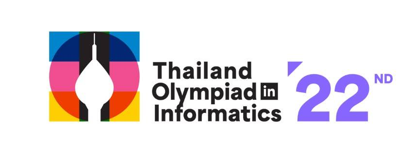

TOI ไม่ได้สร้างแค่ 4 ผู้แทน แต่สร้างฐานคนหลักหมื่นให้ประเทศ
{kind=link}

คำถามว่าเราส่งเด็กไปแข่งโอลิมปิกคอมพิวเตอร์ทำไม มักถูกตอบด้วยภาพที่เห็นง่ายที่สุด คือเหรียญ ชื่อเสียง และความรู้สึกว่าคนไทยก็ทำได้ คำตอบนั้นไม่ผิด แต่ถ้ามองเพียงเท่านั้น เราจะพลาดคุณค่าที่ใหญ่กว่ามากของระบบนี้
คุณค่าที่แท้จริงไม่ได้อยู่ที่เด็ก 4 คนสุดท้ายเท่านั้น แต่อยู่ที่ฐานของคนจำนวนมากที่ถูกดึงเข้าสู่การเรียนรู้ ฝึกคิด ฝึกเขียนโปรแกรม และเติบโตไปเป็นกำลังของประเทศในระยะยาว เหรียญคือยอดพีระมิด แต่ขุมพลังของประเทศอยู่ที่ฐานของพีระมิดนั้น
สอวน.คอมพิวเตอร์และ TOI ทำหน้าที่ขยายผลจากเวที IOI ให้กลายเป็นระบบเรียนรู้ระดับประเทศ ผ่านการคัดเลือก การอบรม การแข่งขัน และการกระจายความรู้ไปสู่โรงเรียนต่าง ๆ ทั่วประเทศ เมื่อระบบนี้ทำงานต่อเนื่อง ก็เกิดการติว การสอน การฝึก และเครือข่ายครูนักเรียนที่โตขึ้นเอง
จากผู้แทนประเทศ 4 คน ภาพจริงจึงขยายไปสู่ฐานผู้มีส่วนร่วมหลักหมื่นในแต่ละปี สิ่งที่ได้ไม่ใช่แค่การแข่งขัน แต่คือecosystem ของการเรียนรู้ที่ค่อย ๆ ทำให้ทักษะการคิดเชิงอัลกอริทึมและการเขียนโปรแกรมกระจายออกไปกว้างขึ้น
ระบบพัฒนาคนไม่ได้สร้างด้วยการแข่งขันอย่างเดียว แต่ต้องสร้างครู เครื่องมือ และสภาพแวดล้อม
โจทย์ของ IOI ไม่เคยหยุดพัฒนา ระบบไทยจึงต้องพัฒนาตาม ทั้งครู เครื่องมือ วิธีสอน วิธีฝึก และสภาพแวดล้อมที่ช่วยดึงเด็กขึ้นมา งานหลังบ้านเหล่านี้มักไม่ถูกมองเห็นเท่าเหรียญ แต่เป็นส่วนที่ทำให้ระบบมีความหมายจริง
TOI-Zero เป็นตัวอย่างของความพยายามสร้างฐานให้กว้างขึ้น โดยให้เด็กเริ่มเขียนโปรแกรมได้ตั้งแต่ก่อนค่าย 1 ผ่าน online judge คลิป และเนื้อหาเรียนเอง สิ่งนี้ช่วยลดความเหลื่อมล้ำได้บางส่วน แต่ไม่ควรถูกมองว่าแทนครูหรือสภาพแวดล้อมในโรงเรียนได้ทั้งหมด ของออนไลน์ควรเป็นตัวเสริมที่ทำให้ครูและโรงเรียนดึงเด็กขึ้นมาได้ดีขึ้น
ประเทศไม่ได้ต้องการแค่คนเก่งที่สุด แต่ต้องการฐานที่กว้างพอให้คนเก่งเกิดขึ้นได้ซ้ำ
เด็กจากระบบ สอวน. เป็นที่ต้องการของมหาวิทยาลัย เพราะทักษะที่ฝึกมานั้นตรงกับความสามารถที่ควรมีอยู่แล้ว ทั้งการคิดเป็นขั้นตอน ความอดทนต่อปัญหายาก การเรียนรู้ด้วยตนเอง และความสามารถในการแปลงโจทย์ให้เป็นระบบที่ทำงานได้
แต่การขยายผลไม่สามารถหวังจากการเทงบประมาณอย่างเดียว ระบบการศึกษาไทยใช้เงินจำนวนมากอยู่แล้ว แต่คุณภาพไม่ได้ขยายตามสัดส่วน หากยังคิดด้วยวิธีเดิมและใช้กรอบเดิม ก็ยากที่จะได้ผลแบบใหม่ การสร้างคนเก่งจึงต้องคิดใหม่ เปลี่ยนกรอบ และอ่านปัญหาต่อเนื่อง เพราะโจทย์ของโลกไม่เคยหยุดรอเรา
4 คนสุดท้ายคือหน้าตาของประเทศ แต่คนจำนวนมากคือพลังระยะยาว
ผู้แทน 4 คนที่ไปยืนบนเวทีโลกเป็นหน้าตาของประเทศอย่างไม่ต้องสงสัย แต่คนอีกจำนวนมากที่เติบโตจากระบบเดียวกันต่างหากคือพลังที่กำหนดอนาคตระยะยาวของประเทศ ทั้งในมหาวิทยาลัย อุตสาหกรรม เศรษฐกิจดิจิทัล และความสามารถในการแก้ปัญหาใหม่ ๆ
ดังนั้น การมอง TOI และโอลิมปิกคอมพิวเตอร์ให้ถูกต้องจึงต้องมองให้ไกลกว่าเหรียญ ต้องเห็นทั้งพีระมิด เห็นระบบครู เห็นเด็กจำนวนมาก เห็นเครื่องมือฝึก และเห็นว่าการสร้าง talent ของประเทศเป็นงานเชิงระบบที่ต้องทำต่อเนื่อง ไม่ใช่กิจกรรมปีต่อปี